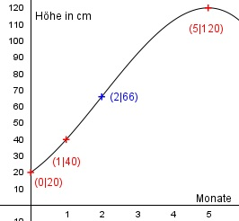

Aufgabe 141 Das Wachstum einer Pflanze soll durch eine ganzrationale Funktion 3. Grades modelliert werden. Folgende Messwerte liegen vor: Monate 0 1 5 Höhe in cm 20 40 120 Nach 5 Monaten hat sie ihre maximale Höhe erreicht. Zu welchem Zeitpunkt ist der Höhenzuwachs am größten?  Allgemeine Form einer ganzrationalen Funktion 3. Grades: f(x) = ax3 + bx2 + cx + d f’(x) = 3ax2 + 2bx + c f’’(x) = 6ax + 2b 4 Bedingungen: 1. Nach 0 Monaten 20 cm hoch bedeutet: f(0) = 20 --> a * 03 + b * 02 + c * 0 + d = 20 --> d = 20 2. Nach 1 Monaten 40 cm hoch bedeutet: (d = 20 eingesetzt) f(1) = 40 --> a * 13 + b * 12 + c * 1 + 20 = 40 --> a + b + c + 20 = 40 | -20 a + b + c = 20 I 3. Nach 5 Monaten 120 cm hoch bedeutet: (d = 20 eingesetzt) f(5) = 120 --> a * 53 + b * 53 + c * 5 + 20 = 120 --> 125a + 25b + 5c + 20 = 120 |-20 125a + 25b + 5c = 100 II 4. Nach 5 Monaten hat sie ihre maximale Höhe erreicht bedeutet: f’(5) = 0 --> 3a * 52 + 2b * 5 + c = 0 --> 75a + 10b + c = 0 III I * (-1) + III -a - b - c = -20 75a + 10b + c = 0 -------------------- 74a + 9b = -20 IV I * (-5) + II -5a - 5b - 5c = -100 125a + 25b + 5c = 100 ----------------------- 120a + 20b = 0 V IV * (-20) + V * 9 -1480a - 180b = 400 1080a + 180b = 0 ------------------- -400a = 400 |:(-400) a = -1 a = -1 in IV eingesetzt: 74 * (-1) + 9b = -20 -74 + 9b = -20 +74 9b = 54 | :9 b = 6 a = - 1 und b= 6 in I eingesetzt: -1 + 6 + c = 20 5 + c = 20 |-5 c = 15 Gesuchte Funktion: f(x) = -x3 + 6x2 + 15x + 20 Der größte Höhenzuwachs findet im Wendepunkt der Funktion statt: f’’(x) = 0 --> -6x + 12 = 0 |-12 -6x = -12 |:(-6) x = 2 Nach 2 Monaten ist der Höhenzuwachs am größten. Monate 0 1 2 3 4 5 Höhe in cm 20 40 66 93 112 120 Höhenzuwachs bis zum: 1.Monat 20 cm 2. Monat 26 cm 3. Monat 27 cm 4. Monat 19 cm 5. Monat 8 cm